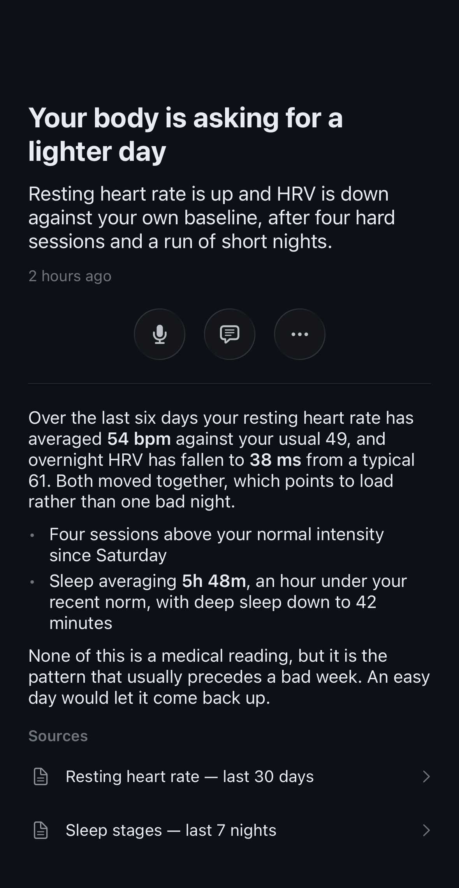
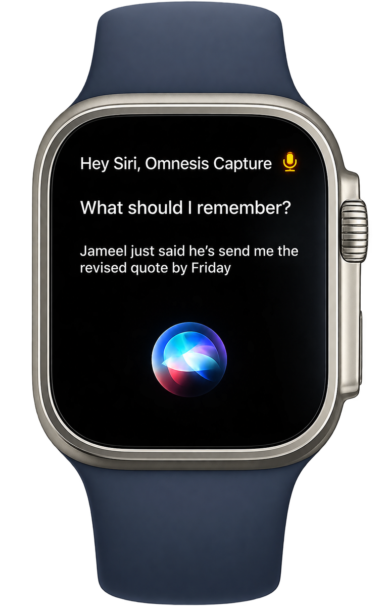

Omnesis Brain
The Omnesis Brain is not enabled by default when you install Omnesis. It is experimental as it is a research problem to ensure the brain remains high signal-to-noise and correct at low cost.
Leap from a system that simply stores and organizes your context into something that genuinely understands it.
From context substrate
to cognitive substrate
The context substrate is the ground truth. It is factual and it does not interpret. But raw retrieval is not understanding. The Omnesis Brain aims to derive the deeper meaning of the things in your life, and to enable intelligence that is proactive rather than reactive.
Background agent
Reacts to mutations in your context substrate to maintain the derived substrate.
Sweeps
Recipes for pattern finding and periodic reviews on their own cadence. Sweeps can be contributed by the community.
Time index
Extract semantic times and ranges buried in your context substrate into a queryable index.
Document annotations
Annotate your documents with deeper insights.
People annotations
Annotate the people in your life with learned insights (relationships, roles, etc.)
Open loops
Understand all the unresolved things in your life: decisions you need to make, actions you need to take, commitments made by you or owed to you, etc.
Briefs
The Omnesis Brain can choose to bring something to your awareness via a “brief” in the companion app.
Sweeps: recipes for
recurrent reflection
Some things about your life are only visible from a distance — changes in health, finance or relationship patterns. Sweeps let a background agent step back and look for those patterns, at a cadence you define.
Briefs: when the Brain
decides to speak
A brief is the Omnesis Brain deciding to tell you something. It can be a briefing about what you need to know for your next meeting, a summary of your day to come, a reminder to top up a bank account that’s about to go negative, or anything else identified by one of your sweeps. You can engage with a brief by responding to it, which opens a new conversation with Omnesis.

Tell the brain,
while on the go
Any context you want to quickly tell the Omnesis Brain? Speak it or type it, directly via the app or via Siri. Say it once, and let it go. Trust that the brain will absorb it and consolidate. Your note is enriched with important metadata: when you said it, where you were when you said it, and what you were doing when you said it.

Watch Engine: detect conditions
expressed in natural language
Ask Omnesis to be notified when a certain condition is met. Omnesis compiles your condition expressed in natural language into a DSL evaluated by the Watch engine.
Tell me when I receive an email about a property listing and I have not replied in 3 days.
listing
source=gmail · event=created
LLM judgesemantic recall
my_reply
source=gmail · event=created
unanswered
3 days after arming
collision: reset
from unanswered
Notifies your devices
omnesis-notify
(thread_id)
(thread_id)cancels
Tell me when sleep, HRV and heart rate all deviated from my usual on the same day.
morning_tick
cron 0 9 * * *
sleep_dev
DuckDB over your analytics
hrv_dev
DuckDB over your analytics
hr_dev
DuckDB over your analytics
all_three
every arm, within 1 day
collision: ignore
from all_three
Notifies your devices
omnesis-notify
(day)
(day)
(day)
Tell me when an unusually large payment is made and it can't be explained by a bill I received or a subscription.
spend
table=bank_transactions
op=insertedpredicate=amount<0
above_p99
DuckDB over your analytics
explained
deliberates with tools
LLM investigationhorizon 180 days
from explained
Notifies your devices
omnesis-notify
Watches can wake your external agent
and trigger workflows
Your external agent can ask Omnesis to watch for something. When the condition is met Omnesis wakes the agent so it can pull the necessary context (via Omnesis privacy gate) and run its workflow — no polling.
 Openclawonline
Openclawonline
any time I receive a new property listing by email, crawl it, confirm 2 bedrooms and under 30 min from work, then ping me here
Sure thing, let me ask Omnesis to create a watch!
2-bed flat, Maple Court
hi Adrien, sending over one new property that just got into the market…
- read email
- crawl listing
- check commute
- draft message
Openclawonline
Sonia sent you a property listing with 2 beds that’s a 15 min walk from work!